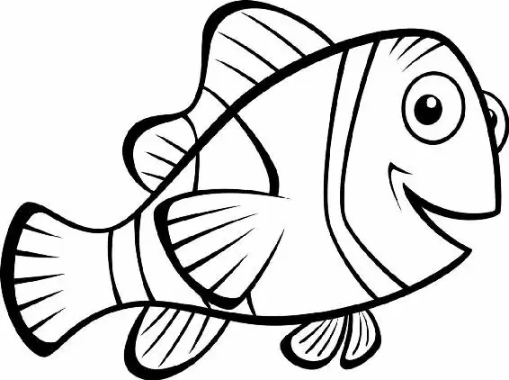

Nigel landed in a flurry of feathers on the dentist’s windowsill. “Where’s Nemo?” he shouted.
Nemo swam to the side of the tank that faced the window. “What is it?” he asked.
“Your dad’s been fightin’ the entire ocean lookin’ for you,” Nigel said, and told Nemo about his father’s adventures. The other fish in the tank gathered around. They wanted to hear the fantastic story Nigel was telling.
Nemo couldn’t believe it! His dad hardly ever left the anemone.
“Shark Bait! Your dad is Superfish!” cried Bubbles.
All the tank fish cheered. Then they turned to Nemo, but he wasn’t there.
“Shark Bait?” called Gill. Suddenly he spied the little fish. He was inside the filter!
Nemo gripped a pebble in his fin. It was a bigger one than last time, and he was determined to do it right. This time he would jam the filter!
After all, his dad was Superfish. And if his dad could be a Superfish, then Nemo was going to be one, too!
He struggled for a moment; then— the pebble was in. Whirrrrrrr! The fan slowed, then stopped. All was quiet.
“You did it!” the tank fish cried as Nemo floated beside them.
“All right, gang,” Gill said. “We have less than forty-eight hours before Darla gets here. This tank will get plenty dirty in that time, but we have to help it along any way we can. Be as gross as possible. We’re gonna make this tank so filthy the dentist’ll have to clean it.”
Meanwhile, Marlin and Dory were saying good-bye to Crush and the other turtles.
“Get ready!” Crush told them. He twisted his head to look at the two fish riding on his back. “Your exit’s coming up.”
Marlin squinted. “Where?”
Dory pointed up ahead. “I see it! Right there!”
Marlin gulped. “You mean that swirling vortex of terror?”
“That’s it, dude,” Crush said.
The eddy swirled around and around a little past the current. “Okay, Jellyman. Go!” cried Crush. He swerved, and Marlin and Dory tumbled from his shell, into the eddy.
They slid down the giant slide formed by the whirling current. Not far off, they could see Crush and the others still riding the EAC.
“Hey, look!” Dory cried. “Turtles!” “Swim straight on through Sydney!”
Crush directed them as they slid. “You tell your little dude I said hi.”
Wait! Marlin remembered Nemo’s question about the sea turtles.
“Crush! How old are you?” he shouted. “A hundred and fifty, dude! And still young! Rock on!” Crush called as the current swept him off.
Marlin and Dory turned away. Now they faced dark, murky water. “We going in there?” Dory asked.
Marlin nodded. For the first time in a long while, he didn’t feel nervous in the least. “We’re gonna just swim straight,” he said.
